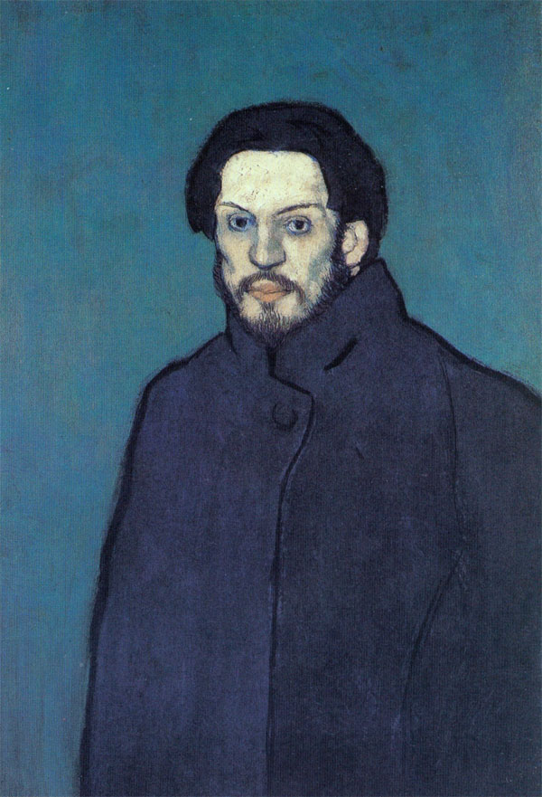
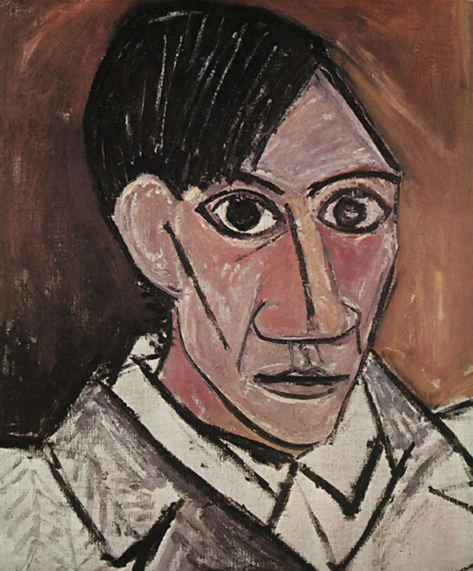
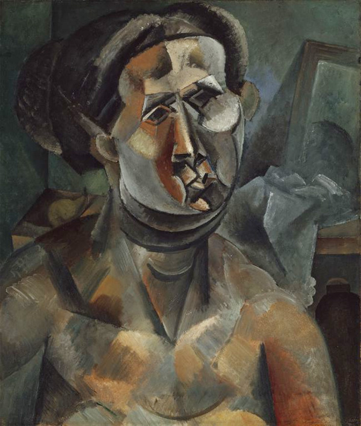
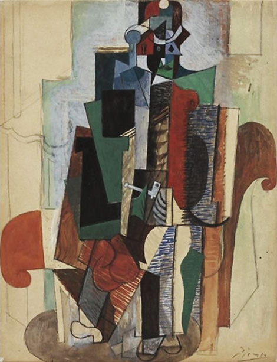
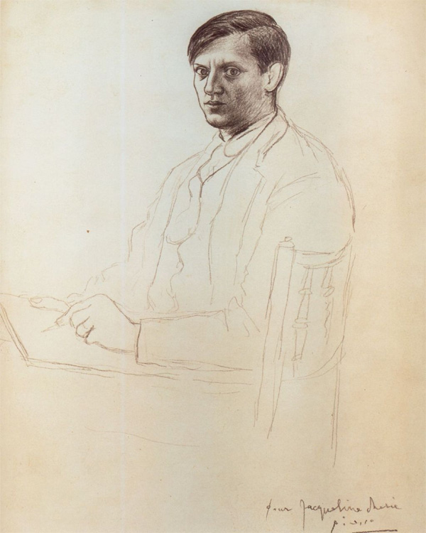
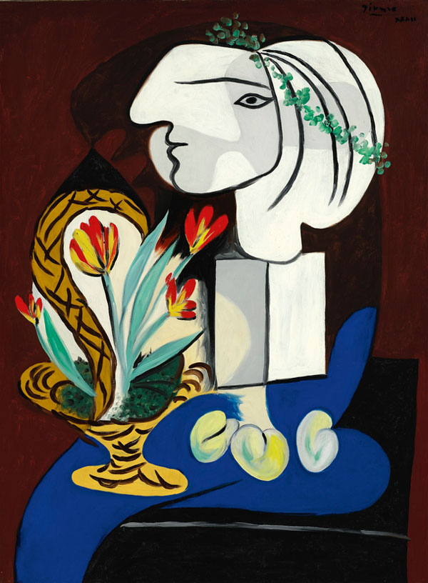
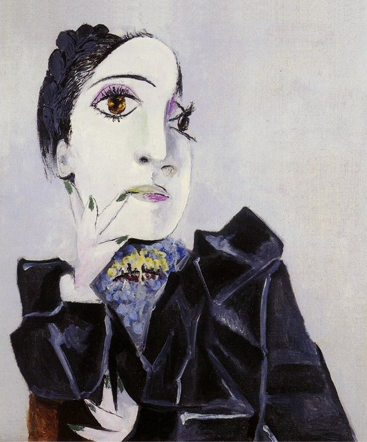
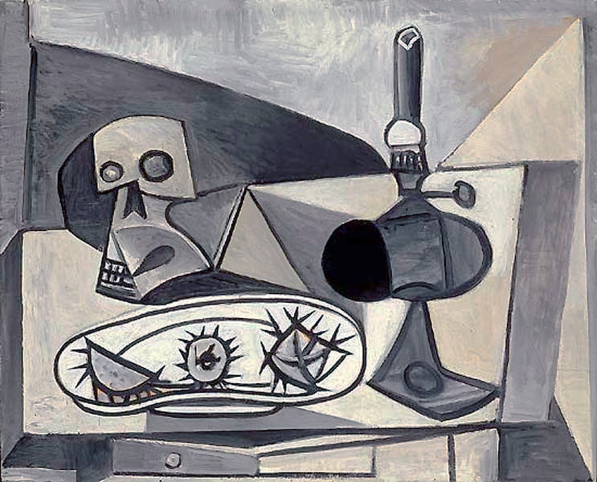
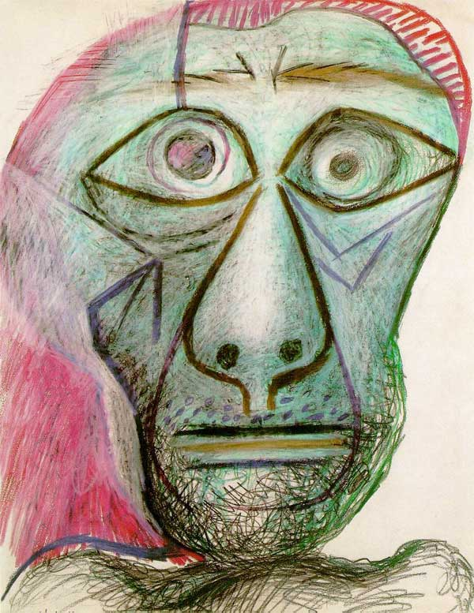

- Early years (1889-1901)
-  Blue period (1901-1905)
-
 Rose period
(1904-1906)
Rose period
(1904-1906)
-  African period (1907-1909)
-  Analytical Cubism (1909-1912)
-  Synthetic Cubism (1912-1917)
-  Classicism period (1917-1925)
-  Surrealist period (1925-1937)
-  Late 30s and war (1937-1945)
-  Post-war period (1946-1954)
-  Late period (1954-1973)